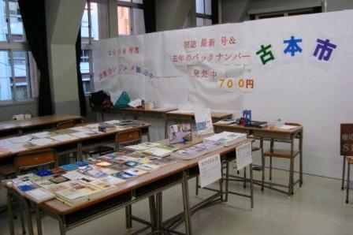

今年、SF研は三田祭に参加し、レジュメの展示と古本・HORIZM販売を行った。以下はその簡潔な報告である。
最初決まっていたのはレジュメの展示とHORIZMの販売だけであった。しかし、途中で古本も一緒に売れたら楽しかろうと考えた。特に異論がなかったので、古本市を行うことになった。
ほうぼうから手を尽くした結果、約400冊、ダンボール4箱分もの本をかき集めることができた(ちなみに、そのほとんどは日吉からわざわざ運んだものだ)。しかし、100kgもの本を運びこんだはいいが、正直どうすればよいのか見当が付かなかった。あまり売れるとは考えていなかったので、とりあえず机と本を並べて、100円と書いた紙を置いてみることにした。
初日は実にのんびりとしていた。ブースが3階の比較的離れた所にあったので外の喧騒とはほど遠く、秋の陽射しが明るく照っていた。1時間の来客はせいぜい5?6人いれば良い方で、読書には最適の環境であった。
変化が訪れたのは2日目からだ。三田祭への来場者が増えるにつれて、少しはずれたところにあるブースにも人が流入しはじめたのだ。昼には小さな人の集まりができるようになり、レジュメを見ていく人も増えていった。これが一時のことに過ぎないのかどうか私たちは見きわめかねていたが、最初適当に書きなぐっていた売り上げリストはどんどん長くなっていき、とりあえず販売時間を前後1時間ずつ伸ばす必要があることを理解した。
人の増加は一時のものではなかった。3日目には狭いブースが混雑するまでになり、新たに100冊の古本が追加された。恐るべきことに最終日には用意したHORIZMが完売してしまった。しかたがないので、先に注文を取って後で送付するという販売形式をとることにした。
最終日の午後6時まで客の流入は止まらなかったが、時間の関係上しかたなく店を占めることにした。売れたといっても数10kgほど残っていた古本は全てその日のうちに運んで処分した。これらの処理が終わったのは午後9時になろうとしていたころであった。
HORIZM31と32, 手前から見たブース, 全景(奥はレジュメ展示)
今回の三田祭参加は誰も予想し得ない程の成功であった。しかし、実のところ、なぜ成功したのかあまりよくわかっていない。どうすればこの三田祭を単なる学校行事としてではなく、外部と交流する機会としてより深く活用できるようになるのだろうか。ここに思索を少しばかりつぎこめば、何か興味深いものが得られると思う。
多数のご来場ありがとうございました。
{kind=link}
{kind=link}
{kind=link}
{kind=link}
{kind=link}